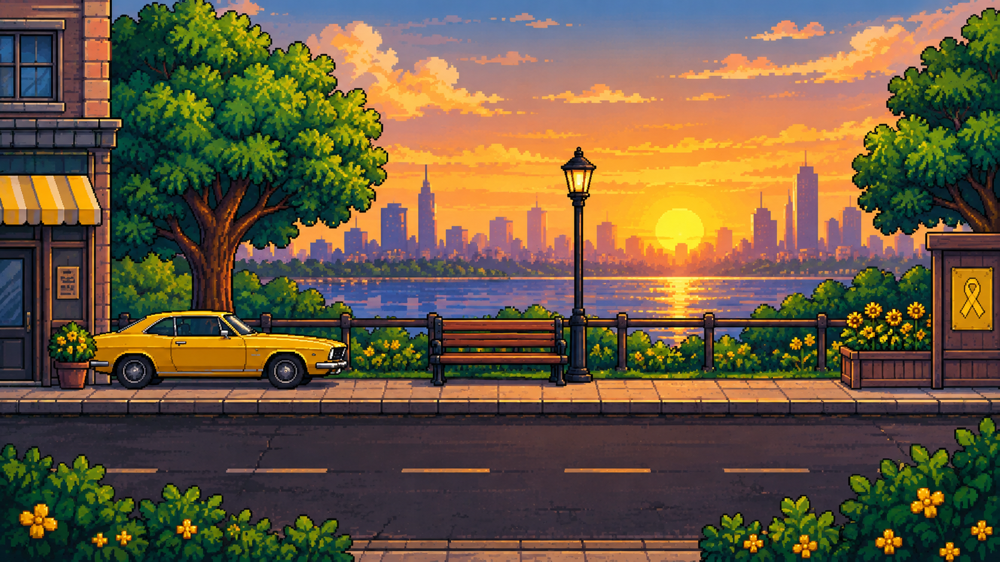
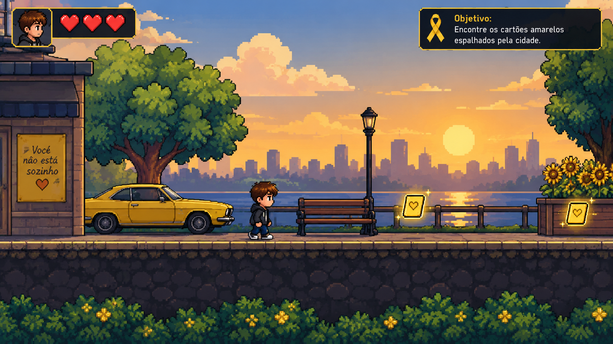

Um jogo 2D inspirado na origem do símbolo amarelo e na importância da conscientização e da prevenção do suicídio.
CONHECER O JOGONosso objetivo é criar um jogo simples e interativo que apresente a história relacionada ao símbolo amarelo e incentive a reflexão sobre a importância de ouvir, apoiar e procurar ajuda.
O jogador deverá percorrer o cenário, encontrar os cartões amarelos espalhados pela fase e chegar ao final para completar a história.
A história do jogo é inspirada em Mike Emme, um jovem americano apaixonado por carros.
Mike restaurou um Mustang 1968 e o pintou de amarelo. O carro acabou se tornando uma característica marcante de sua história.
Após a morte de Mike, em 1994, familiares e amigos distribuíram cartões amarelos com mensagens de apoio e incentivo para que pessoas que estivessem passando por dificuldades procurassem ajuda.
Essa iniciativa ficou relacionada ao movimento Yellow Ribbon, que ajudou a tornar a cor amarela um símbolo associado à conscientização e prevenção do suicídio.
No Brasil, o Setembro Amarelo surgiu posteriormente como uma campanha de conscientização e prevenção.
Nosso jogo utiliza essa história como inspiração. Os acontecimentos e personagens criados para a gameplay são adaptados para o universo do jogo.
É o personagem principal e é controlado pelo jogador. Ele percorre a cidade em busca dos cartões amarelos.
Mike é a pessoa real que inspira a história do jogo e sua relação com o Mustang amarelo.
Representam as mensagens de apoio que o jogador precisa encontrar durante a aventura.
O jogo acontece em um cenário urbano inspirado em uma cidade tranquila. O personagem percorre ruas e áreas próximas a um parque.
Durante o caminho, o jogador encontra bancos, árvores, flores, prédios, um carro amarelo e outros elementos que ajudam a construir o ambiente.
O cenário foi pensado para combinar com o estilo pixel art e criar uma atmosfera tranquila e agradável.

A gameplay será simples, com foco na exploração. O personagem poderá andar para a esquerda e para a direita enquanto procura os itens necessários para completar a fase.

Exemplo visual de como será a gameplay do jogo.
O personagem poderá andar para a esquerda e para a direita.
Cartões amarelos estarão espalhados pelo cenário.
Encontre os cartões e chegue ao final da fase para zerar o jogo.
Entre no cenário e comece a explorar.
Use as teclas para movimentar o personagem.
Procure todos os cartões amarelos espalhados pela fase.
Depois de cumprir o objetivo, chegue ao final do cenário.
Explore o cenário, encontre os cartões amarelos e avance até o final da fase.
Para zerar o jogo, o jogador deverá encontrar todos os cartões necessários e chegar ao final do cenário.
O jogo foi desenvolvido como um projeto escolar de conscientização e utiliza elementos fictícios junto com uma inspiração histórica real.
Em breve você poderá baixar o jogo ou jogar diretamente pelo navegador.
Integrante
Integrante
Integrante
Integrante